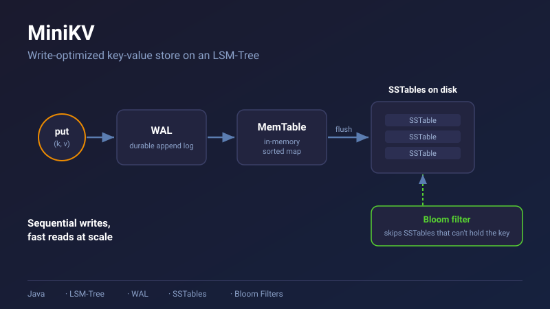
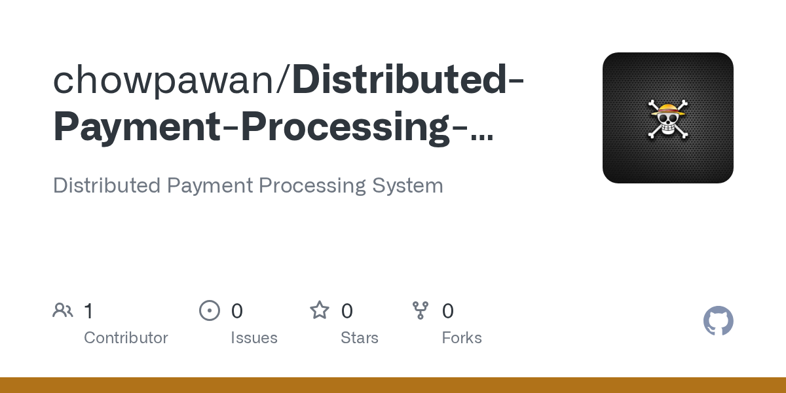
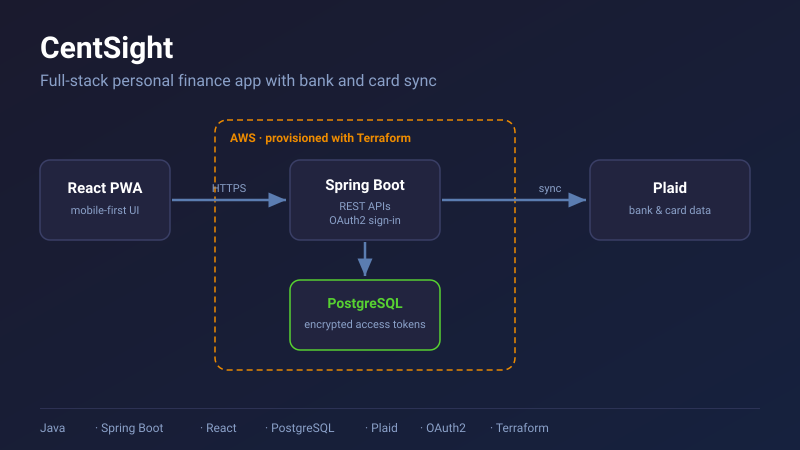
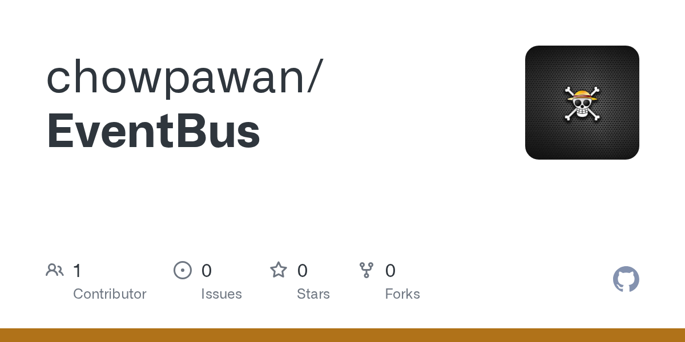
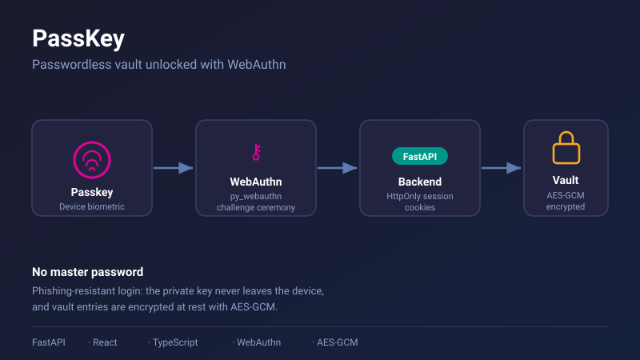

Venkata Poka
Backend Engineer at Intuit · Distributed Systems
Backend Software Engineer at Intuit. On QuickBooks Sales and Invoicing, a tier-0 service, I built the invoice creation APIs, migrated QuickBooks sales APIs out of the monolith into a standalone service, and added Redis caching that cut a company-info lookup from ~700 ms to ~2 ms, all in Java, Spring, Kafka, Redis, and GraphQL on AWS EKS. I also built LangChain agents and MCP servers that cut on-call triage from 45 to 10 minutes. Now on QuickBooks Risk Management, writing Drools rules for fraud and lending decisions.
Tip: press ` anywhere to open the terminal
About Me
Professional Overview
Backend Software Engineer at Intuit. I spent a year and a half on QuickBooks Sales and Invoicing, a tier-0 service, building the Java REST APIs for invoice creation, designing the V3 API orchestration and migrating sales APIs out of the monolith into a standalone service, building GraphQL endpoints for the mobile app, and serving as primary on-call. I now work on QuickBooks Risk Management, writing Drools rules for fraud, sanctions screening, and lending decisions. My work includes:
- Microservices & Migrations - Designed the V3 API orchestration and migrated QuickBooks sales APIs out of the monolith into a standalone service on Maven, Docker, Kubernetes, and Jenkins, with side-by-side response comparison and staged traffic shifts
- Performance - Added Redis (AWS ElastiCache) caching to more than a dozen slow downstream calls; a company-info lookup dropped from ~700 ms to ~2 ms, and an API read that called the contacts API ~112 times now makes one call
- AI Tooling - Built a LangChain agent backed by a 9-tool Splunk MCP server that cut on-call triage from 45 to 10 minutes (78%), and an MCP server that lets 250+ engineers across 10 teams query the sales database from AI coding assistants
- Incident Response - Primary on-call for a tier-0 service; in a US-East P0 that blocked invoice creation for ~50K customers, isolated the failing call in ~10 minutes, led the cutover, and fixed the unbounded cache that OOM-crashed pods
- Storage & Streaming Internals - Built MiniKV, an LSM-tree key-value store in Java (WAL, SSTables, Bloom filters, compaction) running 9.25M mixed operations per second on 8 threads, and a Kafka event bus with schema validation, DLQs, and retries
City : Mountain View, CA, United States of America
Mail : pawanpoka3333@gmail.com
Hobbies : Coding, Volleyball, Hiking & National Parks
Tech I Work With
Hover or tap a skill to see where I used it.
Languages
Backend
Cloud & DevOps
Data & Messaging
Testing & Observability
AI Tooling
Design & Practices
Education
Aug, 2022 - Dec, 2023
Southeast Missouri State University
M.S., Computer Science, Cape Girardeau, Missouri, United States.
GPA: 3.7/4.0
Jul, 2018 - May, 2022
Acharya Nagarjuna University, Guntur, Andhra Pradesh
B.Tech, Computer Science and Engineering.
CGPA: 7.8
Experience
Aug, 2026 - Present
Intuit, Software Engineer, QuickBooks Risk Management
I write and ship Drools rules (DRL and BPMN flows) for fraud, sanctions screening, and Mastercard Match, packaged as Maven KJARs, tested with JUnit, and released through Jenkins to the Risk Onboarding Service. I also wrote the team's rule-release guide.
I lead the policy and rule changes for Revenue-Based Financing (RBF) and New to the Franchise (NTTF) Line of Credit with the risk, lending, and payments teams. That includes Term Loan decisioning for RBF applicants, an RBF eligibility check on the driver's-license verification decline rule, and an account-takeover BPMN flow that sends day-0 Line of Credit and partner traffic to the right decision.
Stack: Java, Drools, Spring Boot, Maven, JUnit, Jenkins
Mar, 2025 - Jul, 2026
Intuit, Software Engineer, QuickBooks Sales & Invoicing
I built and maintained the Java REST APIs for invoice creation in the QuickBooks web and mobile apps, and moved invoice, payment, credit memo, and estimate email and printing to the new service. For print, I added the new modern invoice template, fixed PDF output and templates missing from the Docker image, and wrote Karate tests for each print path.
I designed the V3 API orchestration and wrote its design doc, then migrated QuickBooks sales APIs out of the monolith into a standalone service (Maven, Docker, Kubernetes, Jenkins). We ran old and new code side by side, compared responses to catch mismatches, and shifted traffic over in stages; along the way I fixed a race condition in the Kafka data sync. I also scoped and built GraphQL endpoints for the QuickBooks mobile app (Estimate Status, credits and charges, billable expenses, invoice summary) and worked with the mobile, routing, contacts, print, and checkout teams to move mobile traffic to the new service, including ramping 25% of Estimate traffic.
I added Redis (AWS ElastiCache) caching to more than a dozen slow downstream calls, including settings, tax rates, contacts, payment methods, terms, and company info. A company-info lookup dropped from ~700 ms to ~2 ms, and an API read that called the contacts API ~112 times now makes one call.
On the AI side, I built a Python LangChain agent backed by a 9-tool Splunk MCP server that auto-investigates on-call pages, cutting average triage time from 45 to 10 minutes (78%), and a Python MCP server that lets engineers query the sales service database from AI coding assistants through an SSH tunnel, now used by 250+ engineers across 10 teams.
I was primary on-call for this tier-0 service. In a US-East P0 that blocked invoice creation for ~50K customers, I isolated the failing call in ~10 minutes, led the traffic cutover, then root-caused and fixed an unbounded cache that OOM-crashed pods. I also fixed bugs across QA, pre-production, production, and post-release patches, and reviewed 380+ pull requests from teammates.
Stack: Java, Spring MVC, Kafka, Redis, GraphQL, AWS EKS, Docker, Kubernetes, Python, LangChain, Splunk
Jan, 2024 - Mar, 2025
Humana, Software Engineer
Built and maintained 4 backend REST APIs in Java and Spring Boot for Humana's doctor-appointment scheduling portal (~190 requests/min), covering booking, provider availability, and patient scheduling workflows. Worked on the payment gateway that processes billions of dollars in patient billing and copay payments, integrating a third-party payment processor and using Kafka and AWS SQS for event-driven processing, reducing latency by 10% and error rate by 14%.
Stack: Java, Spring Boot, Kafka, AWS SQS, REST APIs
Nov, 2021 - May, 2022
Optum, Software Engineer Intern
Internship in Hyderabad, India. Triaged and fixed ~40 bugs in a Java/Spring MVC + Hibernate (JPA) codebase and shipped React/JavaScript UI changes. Raised JUnit test coverage from 70% to 85% per module, shipping all changes through code review in two-week Agile sprints.
Stack: Java, Spring MVC, Hibernate (JPA), React, JavaScript, JUnit
P0 Case Study
A US-East outage blocked invoice creation
The page fires
A regional failure in US-East blocked invoice creation for roughly 50,000 QuickBooks customers. Invoicing is how small businesses get paid, so every minute counted. I was primary on-call for the service.
Isolate the failing call
The service fans out to many downstream dependencies. Working through Splunk and our dashboards, I traced the failure to a single downstream call sitting behind an open circuit breaker, in about 10 minutes.
Mitigate first
Rather than wait for a full diagnosis, I led the traffic cutover that restored invoice creation for customers. The root cause was still unknown, but customers were unblocked.
Find the real root cause
Pods were slowly crashing with out-of-memory errors. The culprit was an unbounded in-memory cache that kept growing until it exhausted pod memory. It took about two days to fully understand.
Ship the fix
Once we had the answer, the fix took about 15 minutes: a lifecycle-scoped cache fix that closed the incident and prevented recurrence.
Mitigate, then diagnose
Customers got invoicing back in minutes. The two-day investigation happened after they were unblocked.
Bound every cache
A cache with no size or lifetime limit is a slow memory leak. Every cache needs an eviction policy, in memory or in Redis.
Automate the first pass
I built a LangChain agent backed by a 9-tool Splunk MCP server that auto-investigates on-call pages, cutting average triage from 45 to 10 minutes.
My Projects

MiniKV - Write-Optimized Key-Value Store
A write-optimized key-value store built from scratch on an LSM-Tree design: writes flow through a Write-Ahead Log into an in-memory MemTable, then flush to immutable SSTables on disk. Bloom filters skip SSTables that cannot contain a key, and compaction merges SSTables as data grows. Runs 9.25M mixed operations per second on 8 threads.
Tech Stack: Java, LSM-Tree, WAL, SSTables, Bloom Filters, Compaction

Distributed Payment Processing System
Four Stripe payment services in Spring Boot, with Redis idempotency keys (SETNX, 24h TTL) to stop duplicate charges, a Saga orchestrator with persisted state that recovers after crashes, a scheduled reconciliation job, and HMAC-SHA256 signed webhooks with retry. Covered by 27 JUnit tests.
Tech Stack: Java, Spring Boot, Redis, Stripe API, Saga Pattern, Distributed Transactions

CentSight - Personal Finance App
Full-stack finance app with a mobile-first React PWA and Spring Boot REST APIs that sync bank and card data through Plaid. Uses OAuth2 sign-in and stores Plaid access tokens encrypted in PostgreSQL, and is deployed to AWS with Terraform.
Tech Stack: Java, Spring Boot, React, PostgreSQL, Plaid, OAuth2, AWS, Terraform

Distributed Event Bus Framework
Event bus on Kafka with schema validation at publish time, per-topic dead letter queues, exponential backoff retries (1s, 2s, 4s), idempotent producer (acks=all), and correlation-ID tracing. Prometheus metrics track publish rate, retry rate, DLQ depth, and consumer lag. Two demo microservices show an order-service to inventory-service event chain.
Tech Stack: Java, Spring Boot, Kafka, Prometheus, Distributed Systems

PassKey - Passwordless Vault
A password vault unlocked with a passkey instead of a master password. Implements the full WebAuthn ceremony with py_webauthn, AES-GCM-encrypted vault entries, and HttpOnly session cookies for a passwordless, phishing-resistant login flow.
Tech Stack: FastAPI, React, TypeScript, WebAuthn, AES-GCM
Distributed API Gateway with Rate Limiting
Spring Boot API Gateway with Token Bucket / Leaky Bucket rate limiting on Redis using atomic Lua scripts, Resilience4j circuit breakers, JWT authentication, and correlation-ID tracing. Prometheus/Grafana metrics provide full observability across all gateway operations.
Tech Stack: Java, Spring Boot, Redis, Resilience4j, Prometheus, Grafana
Awards and Certifications
Claude Certified Architect, Foundations (Anthropic)
Anthropic certification in designing and building applications and agents with Claude.
AWS Certified Cloud Practitioner
Certified AWS Cloud Practitioner, demonstrating competence in cloud computing fundamentals and AWS services.
Machine Learning, NPTEL (IIT Madras)
Achieved 76% in Machine Learning through an NPTEL certification program offered by IIT Madras.
Java Full-Stack Development, Board Infinity
Certified by Board Infinity, with skills in Java, Spring Boot, JavaScript, and front-end frameworks.
What Others Say
"Venkata is an exceptional backend engineer with deep expertise in building scalable distributed systems and performance optimization. His work on caching strategies using Redis and HikariCP connection pooling reduced our payment processing latency by 40%. He demonstrated remarkable commitment to system excellence, implementing query optimizations and distributed rate limiting that significantly improved our throughput. His meticulous attention to detail and dedication to long-term system reliability made him instrumental in our infrastructure transformation."
- Manager 3 Software Engineering, Intuit
"Outstanding technical depth and system thinking with a strong commitment to optimization excellence. Venkata demonstrates mastery in caching strategies and database query optimization, implementing solutions that reduced system latency by 35% across critical paths. He shows remarkable dedication to building performant, resilient systems, always thinking about scalability, connection pooling efficiency, and long-term maintainability. His methodical approach to problem-solving through optimization fundamentals makes him an invaluable architect of high-performance systems."
- Principal Engineer, Intuit
Contact Me
pawanpoka3333@gmail.com
Mountain View, CA, United States of America